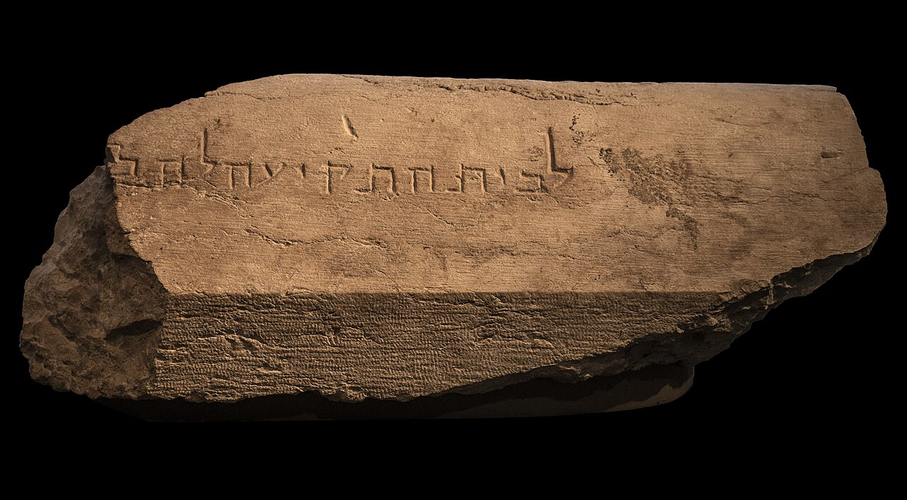

Trumpeting Place Inscription

- Find Name
- Trumpeting Place Inscription
- Historical Period
- Roman
- Artifact Date
- c. AD 1-70
- Date Discovered
- 1968
- Discovery Location
- Temple Mount Excavations, Jerusalem, Israel
- Current Location
- Israel Museum, Jerusalem
- Timeline Era
- Life of Christ
- Description
- A carved stone bearing the Hebrew words 'To the place of trumpeting,' found toppled at the southwestern corner of the Temple Mount where it fell in the Roman destruction of AD 70. It marked the spot where a priest blew the trumpet to announce the start and end of the Sabbath.
- Biblical Significance
- The stone confirms Josephus's description of Temple practice and lets us picture the rhythms of worship in the Jerusalem Jesus and the apostles knew. Stones that announced the Sabbath now announce something else to us: the faith of the Gospels is rooted in a real city, a real Temple, and a real people.
- Evidence Class
- Direct
- Interpretations
- Scholars agree the stone marked the Temple’s ‘place of trumpeting,’ where priests blew the shofar; it fell from the Temple Mount and was found at the foot of the wall.
- Scripture Illuminated
- Related People
- Related Books
- Related Places
- Related Events
Awaiting Review Not yet checked against scholarly sources. Treat its claims as provisional until this entry is reviewed. About verification
Last reviewed: not yet reviewed